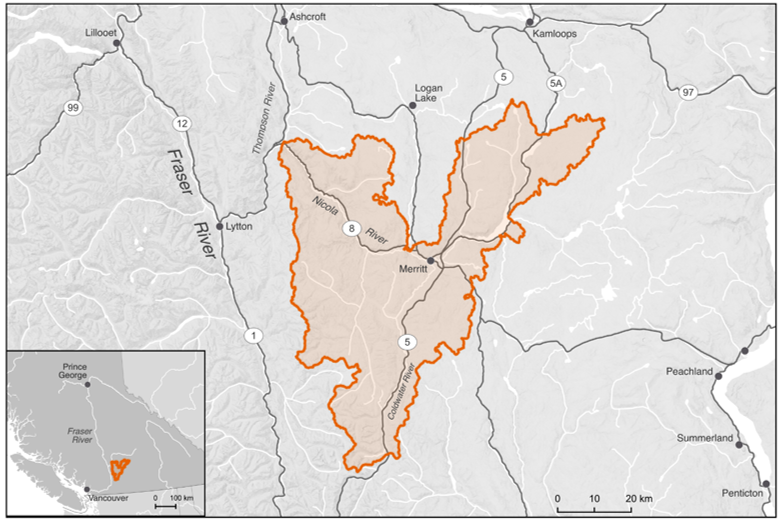
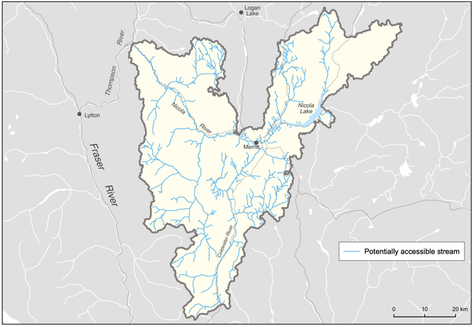

Nłeʔkepmxcín (Nlaka’pamuxcin) | nqilxʷcn (nsyilxcən) | Common Name | Scientific Name |
|---|---|---|---|
k’ʷy’íʔe/pəqéłus | ntytyix | Chinook Salmon | Oncorhynchus tshawytscha |
sx̣a̓yqs | kisúʔ | Coho Salmon | Oncorhynchus kisutch |
cóʕʷłeʔ | wəyqwəyʕaćaʔ | Steelhead | Oncorhynchus mykiss |
Plan Purpose, Approach, and Scope
The following Watershed Connectivity Remediation Plan (WCRP) represents the culmination of a one-year collaborative planning effort, including action implementation, for the Lower Nicola River watershed, the overall aim of which is to build collaborative partnerships within the watershed to reduce the threat of aquatic barriers to migratory fish and the livelihoods that they support. This 10-year plan was developed to identify priority strategies that the Lower Nicola River WCRP planning team see Planning Team for a list of team members proposes to undertake between 2021-2031 to conserve and restore fish passage in the watershed, through lateral and thermal barrier remediation, crossing remediation, and barrier prevention strategies.
WCRPs are long-term, actionable plans that blend local stakeholder and rightsholder knowledge with innovative GIS analyses to gain a shared understanding of where remediation efforts will have the greatest benefit for migratory fish. The planning process is inspired by the Conservation Standards (v.4.0), which is a conservation planning framework that allows planning teams to systematically identify, implement, and monitor strategies to apply the most effective solutions to high priority conservation problems. There is a rich history of fish and fish habitat conservation and restoration work in the Lower Nicola watershed that this WCRP builds upon and aims to compliment over the length of the plan. This includes work undertaken by the Scw’exmx Tribal Council and the five member or affiliate nations (see Project Scope), the Nicola Watershed Governance Project, the Nicola Basin Collaborative, and the Risk Assessment Methodology for Salmon (RAMS). The planning team will aim to work with the Nicola Watershed Governance Project and the Nicola Basin Collaborative to promote coordination, decision-making, and implementation related to this plan.
The planning team compiled existing location and assessment data for potential barriers, habitat data, and previously identified priorities in the watershed, and combined this with local and Indigenous knowledge to create a strategic watershed-scale plan to improve connectivity. To expand on this work, the Lower Nicola River WCRP planning team applied the WCRP planning framework to define the “thematic” scope of freshwater connectivity and refine the “geographic” scope to identify the portions of the watershed where connectivity remediation efforts will take place. Additionally, the team selected target fish species, assessed their current connectivity status in the watershed, defined concrete goals for gains in connectivity, and developed a priority list of barriers for further field investigation to achieve those goals. Field assessments were completed for 28 longitudinal barriers on the preliminary barrier list and 12 lateral barriers that were Identified by the Scw’exmc Tribal Council and Richard Bailey during the summer of 2021, followed by a series of WCRP Update Workshops in spring 2021. The aim of these workshops was for the team to receive updates on progress made during the field season, review assessment results and identify priority barriers, revise the connectivity status assessment and goals, and update the Operational Plan for 2022. While the current version of this plan is based on the best-available information at the time of publishing, WCRPs are intended to be “living plans” that are updated regularly as new information becomes available, or if local priorities and contexts change. As such, this document should be interpreted as a current “snap-shot” in time, and future iterations of this WCRP will build upon the results presented in this plan to continuously improve the practice of aquatic barrier remediation for migratory fish in the Lower Nicola River Watershed. For more information on how WCRPs are developed, see Mazany-Wright, Noseworthy, et al. (2021).
Vision Statement
Healthy, well-connected streams and rivers within the Lower Nicola River watershed support thriving populations of migratory fish. In turn, these fish provide the continued sustenance, cultural, and ceremonial needs of the Nlaka’pamux/Scw’exmx and Syilx peoples, as they have since time immemorial. Both residents and visitors to the watershed work together to mitigate the negative effects of aquatic barriers, improving the resiliency of streams and rivers for the benefit and appreciation of all.
Project Scope

The primary geographic scope of this WCRP is the Lower Nicola River watershed, located in the Thompson drainage basin of the Fraser River system in south-central British Columbia with a drainage area of 376,064 ha (Figure 1). The scope constitutes the Lower Nicola “watershed group” as defined by the British Columbia Freshwater Atlas (FWA), which excludes the Guichon Creek drainage and the Nicola River and Quilchena Creek drainages upstream of Nicola Lake. A consistent spatial framework was necessary to undertake a watershed-selection process at the provincial scale to identify target watershed to improve connectivity for salmonids. The Lower Nicola River watershed was identified by the BC Fish Passage Restoration Initiative as one of four target watersheds for WCRP development (Mazany-Wright, Norris, et al. (2021b)) Culturally and economically important populations of Chinook Salmon (Oncorhynchus tshawtyscha), Coho Salmon (Oncorhynchus kisutch), and Steelhead (Oncorhynchus mykiss) are all found in the watershed, which historically supported Indigenous sustenance and trading economies (Table 1; L. N. I. Band (2015), E. T. Ltd. and Council (2019), C. Band (2021)).
The Lower Nicola River watershed comprises parts of the traditional territory of the Nlaka’pamux/Scw’exmx and Syilx peoples, represented by the Scw’exmx Tribal Council, the four member nations (Coldwater Band, Nooaitch Band, Shackan Indian Band, and Upper Nicola Band), and the individual nations of the Lower Nicola Indian Band and the Cook’s Ferry Band. The Nlaka’pamux/Scw’exmx and Syilx peoples steward the land and the waters of the Lower Nicola River watershed. The planning team will pursue early, meaningful, and continued engagement with First Nations communities involved in work and projects related to this plan. It will be necessary to receive permission from the communities for any work to occur on their territory.
The geographic scope of this WCRP was further refined by identifying “potentially accessible” stream segments, which are defined as streams that target species should be able to access in the absence of anthropogenic barriers (Figure 2). Potentially accessible stream segments were spatially delineated using fish species observation and distribution data, as well as data on “exclusionary points”, which are waterfalls greater than 5 m in height, gradient barriers based on species-specific swimming abilities, and “watershed exclusion areas”, which are portions of the watershed where barrier remediation efforts should not occur. These maps were explored by the planning team to incorporate additional local knowledge, ensure accuracy, and finalize the constraints on potentially accessible stream segments. The planning team identified a few tributaries to the mainstem Nicola River as watershed exclusion areas due to intermittent or insufficient flows to support restoring connectivity for the target species, including Hamilton Creek and agricultural irrigation ditches just downstream of Nicola Lake Dam. Additionally, Stumplake Creek and Peter Hope Creek were identified as watershed exclusion areas due to the presence of invasive Yellow Perch (Perca flavescens). It is unclear whether existing barriers located in these systems will be effective in preventing the downstream spread of Yellow Perch, but the planning team advised maintaining the barriers for the time being. All stream segments not identified as potentially accessible were removed from the scope for further consideration. The resulting constrained geographic scope formed the foundation for all subsequent analyses and planning steps, including mapping and modelling useable habitat types, quantifying the current connectivity status, goal setting, and action planning (Mazany-Wright, Norris, et al. (2021a)).

The thematic scope of this WCRP is freshwater connectivity. Connectivity is a critical component of freshwater ecosystems that encompasses a variety of factors related to ecosystem structure and function, such as the ability of aquatic organisms to disperse and/or migrate, the transportation of energy and matter (e.g., nutrient cycling and sediment flows), and temperature regulation (Seliger and Zeiringer (2018)). Though each of these factors are important when considering the health of a watershed, for the purposes of this WCRP the term “connectivity” is defined as the degree to which aquatic organisms can disperse and/or migrate freely through freshwater systems. Connectivity can be disrupted by physical barriers to connectivity in the longitudinal (i.e., upstream-downstream) and lateral (i.e., connectivity between the mainstem and adjacent wetlands, floodplains, side channels, and off-channel habitat) planes, including dams, weirs, stream crossings, dykes, linear infrastructure, waterfalls, and debris flows. Freshwater systems can also be disconnected by “physiological” barriers that prevent the free dispersal of species, including thermal (i.e., reaches where stream temperatures are too high) or flow (i.e., reaches where stream flow is insufficient to support the requirements of any life stage) barriers.
The broader Nicola basin has been designated as a temperature- and flow-sensitive watershed in British Columbia, and both factors significantly affect connectivity for fish species in the Lower Nicola (E. T. Ltd. and Council (2019), MFLNRORD 2018). The changing thermal regime of the Lower Nicola River watershed is a growing concern, with two scales of thermal disconnectivity occurring within the watershed — watershed-scale changes in thermal regimes and localized barriers preventing access to thermal refugia.
The watershed-scale changes to the thermal regime are linked to several landscape-scale drivers including increases in water withdrawals, changes in land use, deforestation (due to resource extraction and mountain pine beetle infestations), and climate change, which are exacerbated by subsequent changes to channel-forming processes (E. T. Ltd. and Council (2019)). These changes have created annual thermal barriers that prevent access to headwater reaches from the mainstem channels along the valley floor. This has resulted in the adaptation of an early-migrant Chinook Salmon population, which uses the upper portions of Spius Creek and tributaries and the upper reaches of the Coldwater River, where access to the spawning grounds requires passing through the lower sections before the stream temperatures create physiological thermal barriers. These returning adults pass through the lower reaches in May and June as the freshet starts to abate, then hold in deeper pools for two months until they spawn in mid-to-late August (R. Bailey, Nooaitch Band, pers. comm.).
Localized thermal disconnectivity in the lateral dimension occurs when rearing and out-migrating juveniles are unable to access side-channel and off-channel thermal refugia and holding pools due to changing channel processes exacerbated by upland management and the development of linear infrastructure including dykes, roads, railways, and trails. These groundwater-serviced reaches located in side channels or off-channel habitats provide thermal refuge for juvenile fish in the watershed, and can also provide critical refuge for returning spawners. When these lateral refugia become disconnected from mainstem channels, lethal stream temperatures can cause juvenile die-offs. Activities that restore and protect connectivity to these lateral refugia, particularly those cooled by groundwater sources, can help mitigate thermal disconnectivity in the watershed.
Mitigation of the landscape-scale drivers of changes to the thermal regimes are outside of the scope of this plan. While vital for the long-term resilience of the watershed, the broad land-use patterns, over-subscription of water withdrawals, and climate change that are causing chronic thermal issues in the watershed require more complex, coordinated, and resource-intensive solutions than this planning process can provide. This plan is intended to focus on the direct remediation and prevention of localized, physical barriers to lateral thermal refugia and longitudinal connectivity to maintain fish passage to spawning, rearing, and refuge habitat. Lateral, and associated thermal, connectivity was identified by the planning team as the primary connectivity concern in the watershed within the defined scope of this plan.
Target species
Target species represent the ecologically and culturally important species for which habitat connectivity is being conserved and/or restored in the watershed. In the Lower Nicola River watershed, the planning team selected Anadromous Salmonids as the target species group, which comprises Chinook Salmon, Coho Salmon, and Steelhead. The selection of these target species was driven primarily by the target species of the primary funds supporting this planning work. The planning team also identified other culturally and ecologically important species within the watershed to consider for inclusion in future iterations of the WCRP, including Kokanee (Oncorhynchus nerka), Bull Trout (Salvelinus confluentus), resident Rainbow Trout (Oncorhynchus mykiss), Whitefish (Coregonus clupeaformis), Burbot (Lota lota), and Pink Salmon (Oncorhynchus gorbuscha).
Anadromous Salmonids
Anadromous salmonids are cultural and ecological keystone species that contribute to productive ecosystems by contributing marine-derived nutrients to the watershed and forming an important food source for bears and other species (Schindler and Quay. (2003)). Salmon and Steelhead have enduring food, social, and ceremonial value for First Nations in Lower Nicola watershed – having sustained life, trading economies, and culture for the Nlaka’pamux/Scw’exmx and Syilx peoples since time immemorial (L. N. I. Band (2015), E. T. Ltd. and Council (2019), C. Band (2021)). The harvest and processing of these species have helped pass knowledge and ceremony to future generations (Council (n.d.), L. N. I. Band (2015)).
Anadromous salmonid populations in the Lower Nicola River watershed have declined significantly since the mid-1980s, leading First Nations communities to voluntarily reduce their harvest (E. T. Ltd. and Council (2019)). The Nlaka’pamux/Scw’exmx and Syilx peoples have always been stewards of the lands, resources, and fisheries in their traditional territories through an interconnected relationship based on respect and reverence, captured by the Syilx concept of Tmixw – the people only take the salmon that is needed (L. N. I. Band (2015), E. T. Ltd. and Council (2019), U. N. Band (2021)). The stewardship of their waters continues through the work of the Scw’exmx Tribal Council, the four member communities, the Lower Nicola Indian Band, and initiatives like the Nicola Watershed Governance Project. The Chinook Salmon (Endangered), Coho Salmon (Threatened), and Steelhead (Endangered) populations have all been assessed and proposed for Species at Risk Act (SARA) listing by the Committee on the Status of Endangered Wildlife in Canada (COSEWIC). The development and implementation of this WCRP aims to support and supplement on-going work by the Nlaka’pamux/Scw’exmx, Syilx, and other local groups by providing an action plan to address the specific, tractable conservation threat posed by fragmentation through the restoration and preservation of habitat connectivity for these important species. See data methods for maps of modelled anadromous salmonid spawning and rearing habitat in the Lower Nicola River watershed.
Chinook Salmon | k’ʷy’íʔe/pəqéłus | Oncorhynchus tshawytscha
COSEWIC Designated | Status | Trend | Median percent change (last 3 generations) | Median percent change (historic) | Generation length |
|---|---|---|---|---|---|
15 - Lower Thompson (Stream, Spring) | Endangered | TBD | TBD | TBD | TBD |
Chinook Salmon are one of the first species to return to the watershed each year, arriving as early as May, and the population has been in decline since the mid-1990s (L. Ltd. (2007), E. Ltd. (2017)). Known and historic spawning locations include the mainstem Nicola River (mostly between the Coldwater River and Spius Creek confluences), Coldwater River, Spius Creek, lower portions of Clapperton Creek, and upstream of Nicola Lake in Moore Creek and the Upper Nicola River (L. Ltd. (2007), E. Ltd. (2017)). In addition to these spawning systems, important juvenile rearing areas have been observed in Juliet Creek and Voght Creek (L. Ltd. (2007)). Chinook Salmon stocks have been supplemented by the Spius Creek hatchery since the 1980s. Fry and smolt releases have occurred and the Nicola stock is current enhanced by ~200,000 coded-wire tagged yearling smolts annually as a component of the Pacific Salmon Commission (PSC) indicator stock study program (R. Bailey, pers. comm.).
Coho Salmon | sx̣a̓yqs | Oncorhynchus kisutch
COSEWIC Designated Unit | Status | Trend | Median percent change (last 3 generations) | Median percent change (historic) | Generation length |
|---|---|---|---|---|---|
Interior Fraser – Lower Thompson population | Threatened | N/A | 119% | -21% | 3 years |
Coho Salmon begin to return to the watershed in September, with spawning beginning in late October and continuing through December. The population has been in decline since the mid1980s (DFO 1999, E. Ltd. (2017)). Coho Salmon stocks have been supplemented in recent decades by outplants from the Spius Creek Hatchery (E. Ltd. (2017)). The majority of Coho Salmon spawning and rearing occurs in the Coldwater River, Spius Creek, and Maka Creek, but has also been observed in Clapperton Creek, Prospect Creek, and the Upper Nicola River and Moore Creek (L. Ltd. (2007), PSF 2020). The lower reaches of many smaller tributaries are also important Coho Salmon rearing habitat.
Steelhead | cóʕʷłeʔ | Oncorhynchus mykiss
COSEWIC Designated Unit | Status | Trend | Median percent change (last 3 generations) | Median percent change (historic) | Generation length |
|---|---|---|---|---|---|
Thompson River Population | Endangered | Declining | -79% | N/A | 5 years |
Steelhead join Chinook Salmon as the first to appear in the watershed, arriving in the spring (L. Ltd. (2007)). The population is critically endangered and is seen as an extreme conservation concern (Bos 2006). Steelhead spawning and rearing is known to occur in the lower portion of the mainstem Nicola River, Skuhun Creek, Shakan Creek, Nuaitch Creek, Maka Creek, the Coldwater River, Juliet Creek, Voght Creek, Prospect Creek, and Clapperton Creek (L. Ltd. (2007)). Historically, almost all third-order and greater streams would have supported Steelhead, and groundwater-fed thermal refugia continue to provide important rearing and holding habitats (E. Ltd. (2017)).
Barrier Types
The following table highlights barrier types threatening anadromous salmonids in the watershed. The results of this assessment were used to inform the subsequent planning steps, as well as to identify knowledge gaps where there are limited spatial data to inform the assessment for a specific barrier type.
| Barrier Types | Extent | Severity | Irreversibility | Overall Threat Rating: |
|---|---|---|---|---|
| Lateral Barriers (including to thermal connectivity) | High | Very High | Medium | High |
| Natural Barriers | High | Very High | Medium | High |
| Road-Stream Crossings | Very High | Low | Low | Medium |
| Small Dams(<5m height) | High | Low | Medium | Low |
| Abandoned Rail-stream Crossings (longitudinal) | Low | Low | Medium | Low |
| Trail-stream Crossings | Low | Low | Low | Low |
Small Dams (<3 m height)
There are 17 mapped small dams on “potentially accessible” stream segments in the watershed, blocking a total of 351.83 km (~71.42% of the total habitat) of modelled spawning and rearing habitat for anadromous salmon, resulting in a medium extent. The extent rating of these structures was confirmed by the planning team. There are two known fish-passage structures in the watershed, including on the dam at the outlet of McKinley Lake. The remaining dams likely block passage for anadromous salmon and would require significant resources to remediate. However, due to the limited extent of dams in the watershed, a final pressure rating of Medium was assigned. Four small dams were identified on the priority barrier list. Three of the dams require further assessment and confirmation of upstream habitat quality, and the dam observed at the outlet of Kwun Lake does not exist.
Road-stream Crossings
Road-stream crossings are an abundant barrier type in the watershed, with 80assessed and modelled crossings located on modelled Anadromous Salmonid habitat. Demographic road crossings (highways, municipal, and paved roads) block 55.39 km of habitat (57.4%), with 88% of assessed crossings having been identified as barriers to fish passage. Resource roads block 34.04 km of habitat (35.3%), with 73% of assessed crossings identified as barriers. Significant land use and linear development throughout the valley bottom has disconnected the Nicola River from important habitat in some tributaries, including Highway 5 and Highway 8 see Barrier Prioritization. The collective experience and input from the planning team resulted in a Low irreversibility rating due to the existing body of knowledge and resources to support the remediation of road-stream crossings, though it was noted that there is significant variability between resource roads and highway crossings.
Trail-stream crossings
There is very little spatial data available on trail-stream crossings in the watershed, so the planning team was unable to quantify the true Extent and Severity of this barrier type. However, the planning team felt that trail-stream crossings are not prevalent within the watershed and that, where they do exist, they do not significantly impact passage for anadromous salmon. As most crossings will be fords or similar structures, remediation may not be required, or remediation costs associated with these barriers would be quite low. Overall, the planning team felt that the pressure rating for trail-stream crossings was likely Low; however, the lack of ground-truthed evidence to support this rating was identified as a knowledge gap within this plan.
Lateral Barriers (Including to thermal connectivity)
There are numerous types of lateral barriers that potentially occur in the watershed, including dykes, berms, and linear development (i.e., road and abandoned rail lines), all of which can restrict the ability of anadromous salmonids to move into floodplains, riparian wetlands, offchannel habitats, and other groundwater-fed thermal refugia. No comprehensive lateral barrier dataset exists within the watershed, so pressure ratings were based on qualitative local knowledge. Lateral barriers were identified as the primary connectivity concern in the watershed due to a High extent for all target species’ habitats and a Very high severity of barriers (i.e., almost all structures are blocking the movement of fish). Highway 5, Highway 8, and the two abandoned rail lines run along significant stretches of the Coldwater River and mainstem Nicola River and likely disconnect these mainstems from segments of their historic floodplains, off-channel habitats, and thermal refugia in certain locations. Other lateral barriers include irrigation infrastructure that occurs in the valley bottom on agricultural land. Overall, the planning team decided that a High pressure rating captured the effect that lateral barriers are likely having on connectivity in the watershed, particularly thermal connectivity, while recognizing that the lack of data on lateral barriers in the watershed is an important knowledge gap to fill.
Natural Barriers
Natural barriers to fish passage can include debris flows, log jams, sediment deposits, etc., but natural features that have always restricted fish passage (e.g., waterfalls) are not considered under this barrier type. Natural barriers are difficult to include in a spatial prioritization framework due to their transient nature. The planning team felt that the major drivers of natural barriers were massive sediment aggradation that has occurred in the watershed in recent years and changes in the natural flow regime of the watershed. The associated channel destabilization creates impassable stream segments due to a lack of flow and increased lateral migration of streams. The extent, severity, and passability of these obstacles will vary over time depending on the season and year; however, current and historic land-use practices, including forest harvesting, agriculture, and water withdrawals have exacerbated the effect of natural barriers in the watershed. Due to the nature of these land-use practices, the severity of natural barriers was rated as Very high and the irreversibility as Medium, the latter due to the effort required to rectify poor land-use practices at a watershed scale. Overall, the planning team felt that a pressure rating of ‘High’ adequately captured the effects of natural barriers.
Small Dams (<5m height)
There are five mapped dams on modelled anadromous salmonid habitat in the watershed, blocking a combined 5.08 km (5.3%) of spawning and rearing habitat, resulting in a Low extent see barrier prioritization for dams included in the intermediate barrier list. The extent rating of these structures was confirmed by the planning team. There are three known fish passage structures in the watershed, including on Nicola Lake Dam, and the remaining dams likely block passage for anadromous salmonids. Many dams in the watershed are irrigation impoundments that are of little consequence to target species. Remediating dams requires significant resources; however, due to the minimal extent of dams in the watershed, a final pressure rating of Low was assigned to this barrier type.
Abandoned Rail-Stream Crossings (Longitudinal)
There are no active rail lines in the Lower Nicola watershed; however, infrastructure remains in place from the historic Nicola Valley Railway and the Kettle Valley Railway in the form of abandoned railbeds and associated stream crossings. There are 4 modelled abandoned railstream crossings located on modelled anadromous salmonid habitat, blocking a combined 1.94 km of habitat (2.01% of the total habitat blocked; see barrier-prioritization for abandoned rail-stream crossings included in the intermediate barrier list). There are no data to support the assessment of the severity of these crossings, but the collective knowledge of the planning team resulted in a Low severity rating because most are believed to be serviced by bridges or open-bottom structures. Despite the moderate technical knowledge and resources required to remediate these barriers, the low extent and low severity resulted in the overall pressure rating of Low. The abandoned rail lines, however, were identified by the planning team as a contributor to lateral and thermal disconnectivity in the watershed (see Lateral Barriers to Thermal Connectivity).
Trail-stream Crossings
There are very little spatial data available on trail-stream crossings in the watershed, so the planning team was unable to quantify the true Extent and Severity of this barrier type. However, the planning team felt that trail-stream crossings are not prevalent within the watershed and that where they do exist, they do not significantly restrict passage for anadromous salmonids. Because most crossings will likely be fords or similar structures, the remediation costs associated with these barriers would be quite low. Overall, the planning team felt that the pressure rating for trail-stream crossings was likely Low.